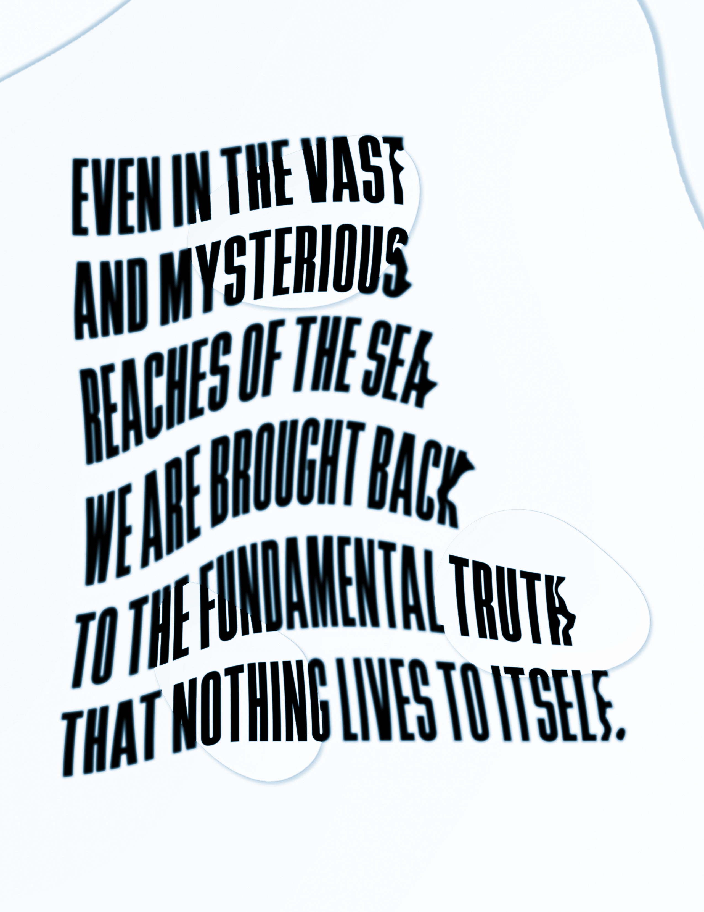
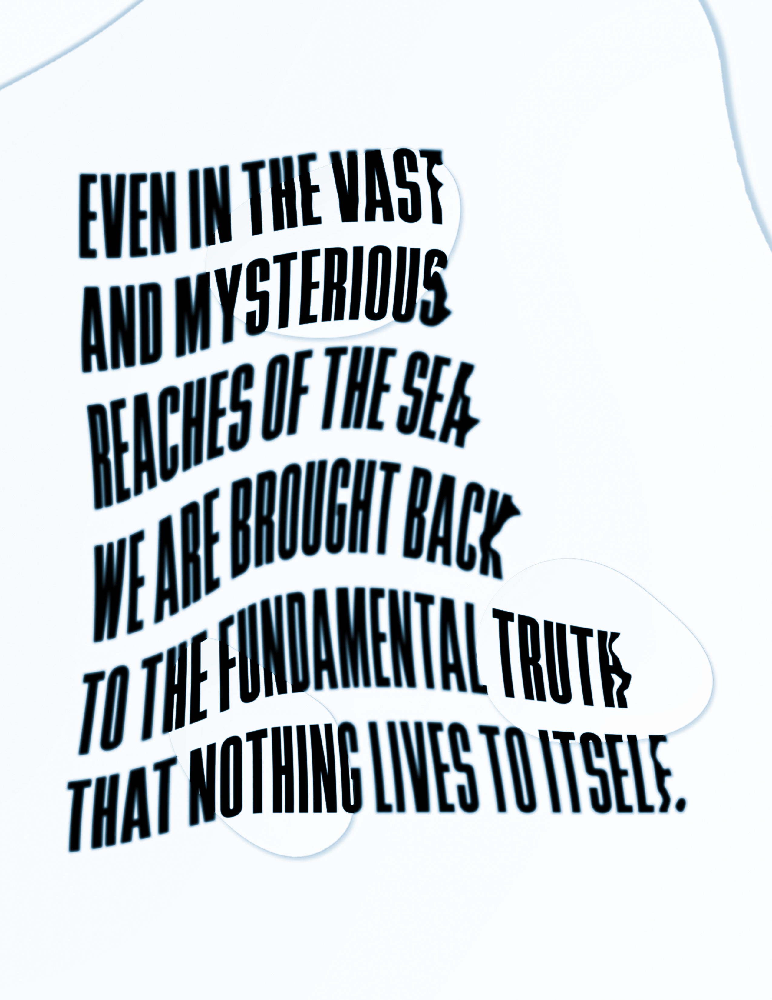

Photista
Photista 2020 is a series of mini projects exploring the topic of marine algae. The name Photista is a combination of two words: Photosynthesis /ˌfōdōˈsinTHəsəs/ and Protista /prōˈtistə/.
Photosynthesis noun is the process by which green plants and some other organisms use sunlight to synthesize foods from carbon dioxide and water. Photosynthesis in plants generally involves the green pigment chlorophyll and generates oxygen as a byproduct.
Protista noun is a kingdom or large grouping that comprises mostly single-celled organisms such as the protozoa, simple algae and fungi, slime molds, and (formerly) the bacteria. They are now divided among up to thirty phyla, and some have both plant and animal characteristics.
Semiotic Still Life
Medium: Cinema4D, 16:9
Themes: Research, Algae, Hosts, Consumption
The choice to use 3D modeling as the medium was to represent that this field of research is difficult to access depending on the location. Most of the data is collected by researchers and scientists who have the equipment to analyze these macro and micro species.
The anemone and the coral in the still life represents the organisms that algae deem as hosts. These organisms require the nutrients provided by photosynthetic algae to survive. The plant and bowl represent consumption by people and other organisms (Algae are primary producers). The bowl of kelp represents the common macroalgae that can be found ranging from life in the oceans, to our food markets, and health products.

Flag
Medium: Illustrator, Figma
Themes: Modular, Photosynthesis, Algae
The flag prompt helped me to focus on how to create a system of design that is clear and easy to replicate. I have 11 steps here to recreate this exact design in illustrator or figma. Overall, this project helped me to think about: “How can we use design as a tool for teaching?”
Photista Flag: 11 Steps in Illustrator and Figma
1. Create a canvas that is 1920 x 1080 px and fill it with the color value #1F587F.
2. Create two squares with the color value of #FBDA33 and align them vertically, select both squares and scale them to fit the top and bottom of the canvas.
3. Delete the top square.
4. Create four little squares with the color value of #4A9339 and scale them proportionally to fit inside the bottom yellow square. The four green squares should now be covering the yellow square.
5. Delete the top left green square.
6. Select the top right green square and curve its top left corner fully (in Illustrator pull the corner back fully) (set the corner radius to 360° in Figma). and repeat with the bottom left green square.
7. For the bottom right green square, take its bottom right corner and curve it fully in Illustrator (corner radius to 360° in Figma).
8. Now take the main yellow square and curve it proportionally fully on all sides in Illustrator (set the corner radius of all the sides to 360° in Figma) the result should be a yellow circle.
9. Select all three green curved squares and add a 10px stroke with the color value of #4A9339 (outer-stroke in Illustrator) (center-stroke in Figma). Change the fill of the squares to be the color value of #1F587F (same as background).
10. Now group the shapes we just created (don’t group the blue canvas background) and align it with the center of the canvas.
11. Finally, shift + rotate the grouped object clockwise once which is 315° in Illustrator (set the rotation to -45° in Figma)
 

Typographic Poster
Medium: Google Docs, Photoshop
Themes: Marine Biology, Aphorism
For the poster, we were encouraged to use common tools, so the first poster was created in Google Docs and the second in Adobe Photoshop.
Aphorism /ˈafəˌrizəm/ noun is a concise statement of a scientific principle, typically by an ancient classical author.
The quote is by Rachel Carson (1907–1964), in her book Silent Spring, who was an American marine biologist:
Even in the vast and mysterious reaches of the sea we are brought back to the fundamental truth that nothing lives to itself.